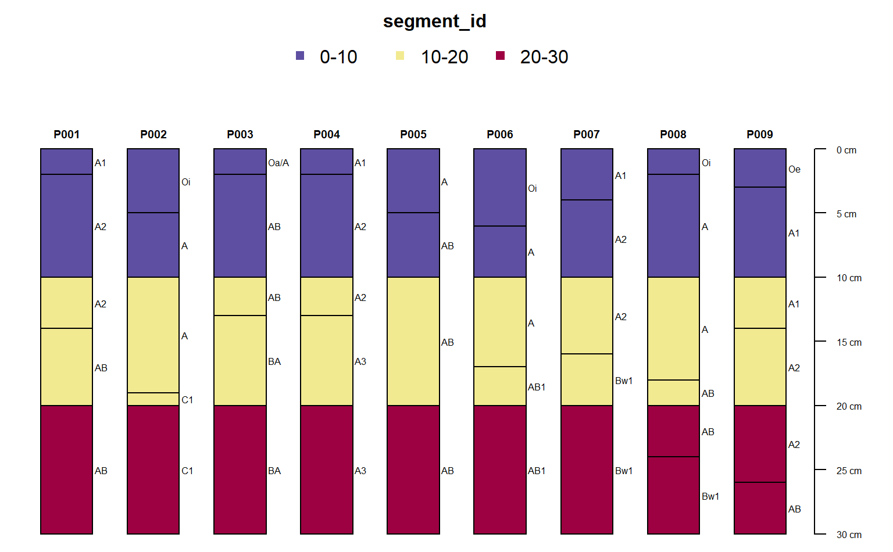
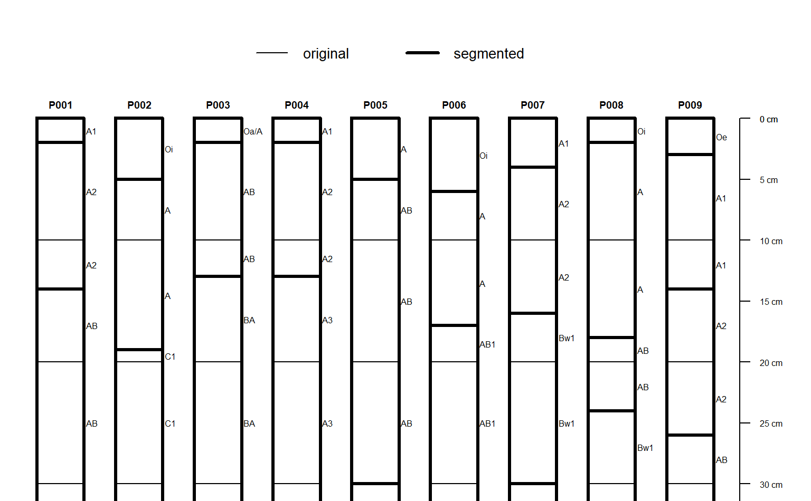

This function adds depth interval ("segment") labels to soil horizon data associated with SoilProfileCollection and data.frame objects. Additional horizon records are inserted when a segment label does not overlap with a horizon boundary. See examples.
segment(object, intervals, trim = TRUE, hzdepcols = NULL)
| object | either a |
|---|---|
| intervals | a vector of integers over which to slice the horizon data (e.g. |
| trim | logical, when |
| hzdepcols | a character vector of length 2 specifying the names of the horizon depths (e.g. |
Either a SoilProfileCollection or data.frame with the original horizon data segmented by depth intervals. There are usually more records in the resulting object, one for each time a segment interval partially overlaps with a horizon. A new column called segment_id identifying the depth interval is added.
This function adds segment labels to soil horizon data according to intgervals (e.g. c(25, 100) or 25:100). Compared to slice, slab, and glom, segment performs no aggregation or resampling of the source data, rather, labels are added to horizon records for subsequent aggregation. This makes it possible to process a very large number of records outside of the constraints associated with e.g. slice or slab.
Stephen Roecker
# example data data(sp1) # upgrade to SPC depths(sp1) <- id ~ top + bottom # segment and trim z <- segment(sp1, intervals = c(0, 10, 20, 30), trim = TRUE) # display segment labels # note that there are new horizon boundaries at segments par(mar = c(0, 0, 3, 1)) plotSPC(z, color = 'segment_id', width = 0.3)# highlight new horizon records par(mar = c(0, 0, 2, 1)) plotSPC(z, color = NA, default.color = NA, width = 0.3, lwd = 1)plotSPC(sp1, color = NA, default.color = NA, width = 0.3, lwd = 3, add = TRUE, name = NA, print.id = FALSE)legend('top', horiz = TRUE, legend = c('original', 'segmented'), lwd = c(1, 3), cex = 0.85, bty = 'n')# \donttest{ # same results as slab() # 10 random profiles s <- lapply(1:10, random_profile, n_prop = 1, SPC = TRUE, method = 'random_walk') s <- combine(s) a.slab <- slab(s, fm = ~ p1, slab.structure = c(0, 10, 20, 30), slab.fun = mean, na.rm = TRUE) z <- segment(s, intervals = c(0, 10, 20, 30), trim = TRUE) z <- horizons(z) z$thick <- z$bottom - z$top a.segment <- sapply(split(z, z$segment_id), function(i) { weighted.mean(i$p1, i$thick) }) res <- data.frame( slab = a.slab$value, segment = a.segment, diff = a.slab$value - a.segment ) print(res)#> slab segment diff #> 0-10 0.6658229 0.6658229 1.110223e-16 #> 10-20 0.5567329 0.5567329 0.000000e+00 #> 20-30 0.7133932 0.7133932 0.000000e+00res$diff < 0.001#> [1] TRUE TRUE TRUE#> SoilProfileCollection with 296 profiles and 1254 horizons #> profile ID: soil | horizon ID: hzID #> Depth range: 70 - 100 cm #> #> ----- Horizons (6 / 1254 rows | 10 / 19 columns) ----- #> soil hzID top bottom sand silt clay R25 G25 B25 #> soil1 1 0 8 32.3 10.9 52.8 0.41 0.38 0.34 #> soil1 2 8 25 29.0 11.2 58.2 0.31 0.28 0.25 #> soil1 3 25 55 34.9 11.6 51.9 0.31 0.28 0.25 #> soil1 4 55 100 38.2 10.9 49.7 0.31 0.28 0.25 #> soil10 5 0 10 25.2 14.4 58.4 0.43 0.37 0.30 #> soil10 6 10 25 24.4 14.9 59.0 0.44 0.37 0.31 #> [... more horizons ...] #> #> ----- Sites (6 / 296 rows | 1 / 1 columns) ----- #> soil #> soil1 #> soil10 #> soil100 #> soil101 #> soil102 #> soil103 #> [... more sites ...] #> #> Spatial Data: #> [EMPTY]nrow(test1)#> [1] 1254#> 0.2 Mb#> SoilProfileCollection with 296 profiles and 29523 horizons #> profile ID: soil | horizon ID: hzID #> Depth range: 70 - 100 cm #> #> ----- Horizons (6 / 29523 rows | 10 / 19 columns) ----- #> soil hzID top bottom sand silt clay R25 G25 B25 #> soil1 1 0 1 32.3 10.9 52.8 0.41 0.38 0.34 #> soil1 2 1 2 32.3 10.9 52.8 0.41 0.38 0.34 #> soil1 3 2 3 32.3 10.9 52.8 0.41 0.38 0.34 #> soil1 4 3 4 32.3 10.9 52.8 0.41 0.38 0.34 #> soil1 5 4 5 32.3 10.9 52.8 0.41 0.38 0.34 #> soil1 6 5 6 32.3 10.9 52.8 0.41 0.38 0.34 #> [... more horizons ...] #> #> ----- Sites (6 / 296 rows | 1 / 1 columns) ----- #> soil #> soil1 #> soil10 #> soil100 #> soil101 #> soil102 #> soil103 #> [... more sites ...] #> #> Spatial Data: #> [EMPTY]nrow(test2)#> [1] 29523#> 4.9 Mb# segment and aggregate test3 <- segment(horizons(sp5), intervals = c(0, 5, 15, 30, 60, 100, 200), hzdepcols = c("top", "bottom") ) test3$hzthk <- test3$bottom - test3$top test3_agg <- by(test3, test3$segment_id, function(x) { data.frame( hzID = x$hzID[1], segment_id = x$segment_id[1], average = weighted.mean(x$clay, w = x$hzthk) ) }) test3_agg <- do.call("rbind", test3_agg) head(test3_agg)#> hzID segment_id average #> 0-5 1 0-5 40.31517 #> 100-200 5 100-200 48.13381 #> 15-30 2 15-30 43.88592 #> 30-60 3 30-60 46.01368 #> 5-15 1 5-15 41.89718 #> 60-100 4 60-100 47.65180